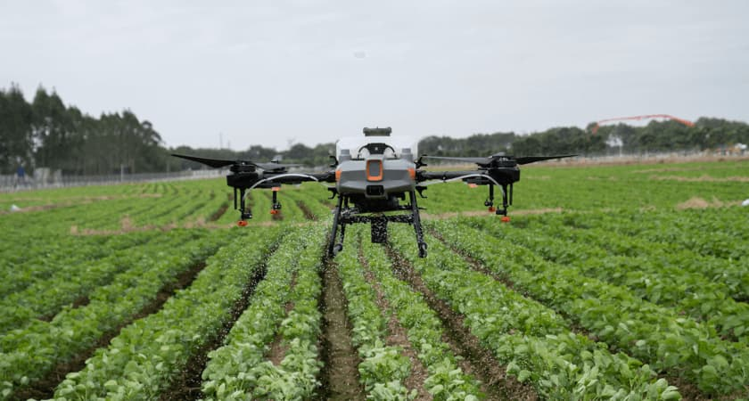

Overview of Precision Agriculture
Precision agriculture is a key application of biosystems engineering that uses technology to optimize crop production, reduce resource waste, and promote sustainability.

Benefits to Biosystems Engineering
- Water Conservation: Precision irrigation systems save up to 20-50% of water usage while maintaining or increasing yields.
- Yield Optimization: Data-driven insights enable targeted inputs, boosting crop yields by up to 20% in variable field conditions.
- Sustainability: Reduces overuse of fertilizers and pesticides, protecting soil health and minimizing environmental impact.